注：这篇其实写了好几天了，但是很多当时的感触想不起来了，所以有些难产。
今天晚上就要出发去登顶了，之所以选在凌晨出发，是为了能够在乞力马扎罗的山顶看到日出。
上山的路程大约4.86km，一般用时5-7小时。我一般都看估计里比较大的数字，也就是7小时。日出是大约6点，所以我应该11点左右出发。
为此我和Zakayo商量，我10:30pm起床，我们11:00-11:30pm出发。最终的出发时间是11:15pm。之所以用了这么久，主要是因为装备繁多。
登顶这一天的装备可能是我花费最多时间准备的。上衣我就穿了4件，分别是羊毛运动保暖内衣，里层的羽绒服，冲锋衣，防水羽绒服。下身则是两条羊毛运动保暖裤，以及一条雪裤。脚上的袜子套了两层，再加上一双高帮的登山靴。脖子上是一个围脖，头上一个保暖帽，一个头灯，眼睛外是雪镜，手上两层手套。裤子和鞋子的连接处加了gaiter用于防尘。
所有的装备主要都是为了御寒，防风。因为在半夜没有阳光的时候，高海拔的地方温度非常得低，就算这样穿，可能也只能算是刚刚够而已。
11:15pm出发的时候，外面一片漆黑，我的crew的几个人跟我打招呼，祝我成功。今天陪我登顶的除了我的导游Zakayo，还有Fadhili，我的summit porter，他今天会背我上山以后的一些必需品，比如暖身子用的热水，急救用的便携氧气罐等等。我除了手上的两根登山杖，身上穿的厚厚的衣服，别的什么也没带。背后空空的，没有任何的负重，以便轻装上阵。
因为刚睡醒，所以我的脚步还算轻松。不过我知道今天登顶会比较艰苦，所以我还是老老实实地跟在Zakayo后面。
Zakayo有三种脚步，他把这三种脚步分别叫：pole pole，super pole pole，以及heels on toe。pole pole在坦桑尼亚当地通用的语言，斯瓦希里语里的意思是“慢慢地”。所以翻译过来就是慢慢走，超级慢地走，第三种是把后面跟着的人的脚尖放到前一个人抬起来的脚后跟站的地方，也就是紧贴着前一个人走。慢慢走的话，他的前脚和后脚之间会隔一个脚的距离，而超级慢慢走的话，他的前脚和后脚之间会几乎没有距离。
一开始他用的是pole pole的步伐，在4600米的海拔我已经适应了这种步伐的节奏，呼吸稍微有点喘，但是还不会大口喘气。
走了大约10分钟，我们终于走出了我们这个巨大的campsite，来到了一大片页岩片堆积的石头路上。再往前走，又走了大约半小时，我们来到了一个新的营地，Zakayo说这里是一片需要特别注册才能扎营的营地，有一个p打头的名字。
走过这片营地，我们开始爬坡。一开始的爬坡还算没有特别累。大约走了一个小时，温度似乎越来越低，风也越来越大，我也感觉似乎吸进来的氧气越来越不够我消耗的了。我的喘气越来越粗，终于我跟Zakayo说我希望休息一下。
喝了几口水，嘴巴里叼着一根棒棒糖，我们又继续往上爬。
我们基本上完全依靠头灯的光线照亮前路，要不是跟着Zakayo，我都不知道应该向哪里迈步，往哪里弯可以继续向上。
现在我们的脚下开始出现很多的小石子，混杂着大量的尘土，中间偶尔还有一些大石头，也需要跨过去。
再往上爬一段，路又会变成全都是岩石自然形成的台阶，需要大跨步才能继续往上。平时这样的路根本不成问题，但是随着海拔越来越高，如果连续上好几个台阶，我的呼吸会变得更加急促，有的时候还需要停下里喘几口气，才能继续向前迈步。
Zakayo和Fadhili边陪着我走，他们两一边聊着天。似乎海拔对他们根本没有影响。走着走着，可能是看我实在爬不动了，Zakayo带头唱起了坦桑尼亚当地的土歌，和Fadhili一人一句互相呼应。不得不说这样的音乐挺有效的，有点像是那种拉练的歌，听的时候就不会那么注意到自己喘不上气的感觉了。
不知不觉我们已经爬了很久一段了。中间的路一会儿是沙石路，一会儿是石头台阶路。又不知道经过了多久，在一次休息的时候，我往山下看，后续队伍的头灯沿着山路排列，像是一串星星一样。
因为通常大家最早出发是在0:00，而我是11:20pm就出发的，所以我要比大部队前进得多不少。不过爬山的人里也有爬得很快的，这时候已经有一两支队伍超过了我们。不过我也不是很着急。
我问Zakayo现在几点了，他说3点了。这样算我们已经在山上爬了3个半小时了。
在又一次休息的时候，Fadhili打开了包，拿出了保温杯。用里面的热水配上热巧克力粉，冲了一杯热巧克力。这样冲出来的热巧克力非常烫嘴，因为保温杯里的热水温度还很高。不过因为气温很冷，所以热巧克力降得很快。我慢慢喝了一半，看Zakayo和Fadhili都没有戴手套（我戴了两层手套，手指还冻僵了），似乎挺冷的，就把剩下的给了他们。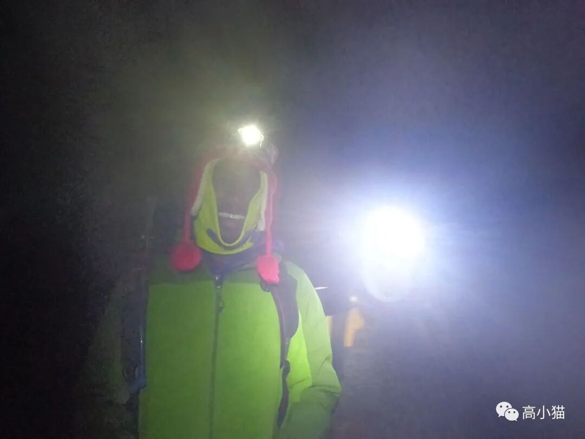
喝完热巧克力拍的又走了一段，我实在是有点走不动了。脚步越来越慢，每次要是上两个台阶，就一定要喘个十次。可能是我休息太久了，Zakayo开始在我休息的时候催促我了，说等太久的话会冻僵的。其实我并没有那么冷。不过我想他们两个没有钱买比较好的保暖衣物，应该是很冷的。
又走了一段，我也慢慢开始有点跟不上Zakayo的脚步了。他已经在用super pole polr的脚步在走了，但是我每迈一步就要喘两口气，才能把气补回来。他看我跟不上了，也只好等我。
我的头也开始有些抽痛，类似于熬夜的感觉，同时感觉有点晕。我的胸口似乎压了一块儿石头一样，感觉无论怎么用力张开，都吸不进足够多的氧气。因为我吸冷空气的动作太大，有的时候甚至冷空气会呛到我。
又走了不知道多久，我已经很绝望了。我就问Zakayo那个Stella point在哪儿。
Stella point是登顶位置前的一个目的地，一旦到了Stella point以后，后面的上升坡度就没有那么陡了，也会好爬非常多。
Zakayo指了指在我们前面头灯灯光里最高的那一个，跟我说那个地方就是Stella point了。那是一个远远可以望到的地方。
这样的指望并没有持续太久，毕竟我的身体已经快到极限了。我的意志力也开始慢慢减少，我从最一开始的很坚定我一定能爬到顶的，开始变得有一点点怀疑了。
天色还是黑蒙蒙的，不过天边开始有一点点红色开始映了出来。我们还是慢慢在山上一点点挪动。Stella point看上去比之前近的多了，不过似乎还要爬一个多小时的样子。
Zakayo和Fadhili的歌声又响起来了。这次的精神鼓励并没有持续多久。我真的是要走不动了。
但是我们还是在不停地向前走。
慢慢地Stella point越来越近了，最后的一段全都是大台阶，我每上几个台阶，都要停下来喘好几口气。
天色开始有些蒙蒙亮了，似乎离日出越来越近了。
终于，上升的台阶的上面再也没有更多的台阶了。我们离Stella point很近了。
到了…
回头看天空，我看到黑色的天空已经有些亮了起来，边缘点缀了一圈红色的光晕，真的太美了。
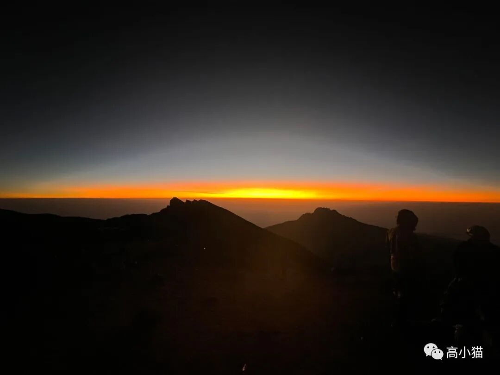
日出前我的眼泪刷地就下来了，全部留在了我的护目镜里，让我眼前的视线变得模糊一片。
Zakayo和Fadhili看上去很轻松。他们拍着我，恭喜我终于上到了Stella point。看到我哭他们似乎很错愕，跟我说不要哭了，我们已经上来了。不过我还是止不住眼泪。
我也说不清楚自己为什么哭，似乎有一种长久的努力终于得到结果的感觉，太不容易了，所以哭了。
我草草在Stella point拍了照，接下来就继续往Uruhu peak（山顶）进发了。拍照的休息真的有帮到我，而且Zakayo跟我说，接下来的路就很轻松了，所以我松了一口气。
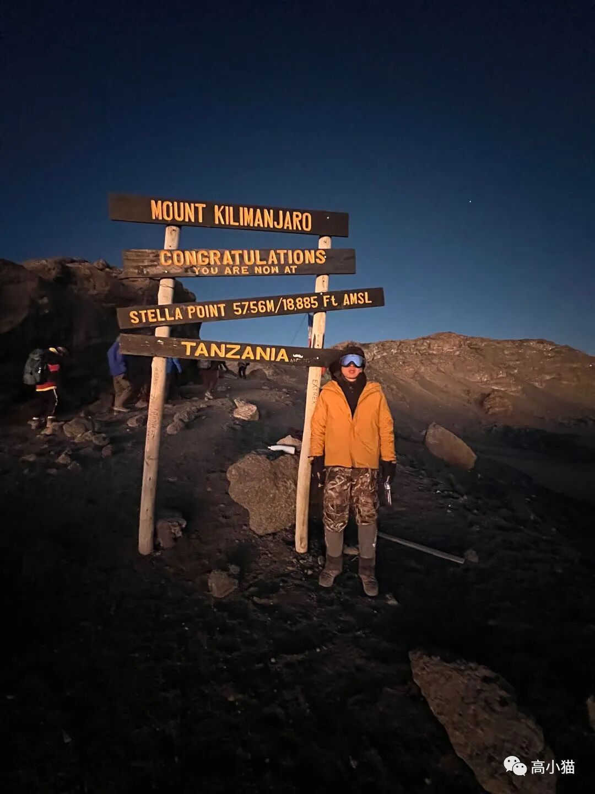
这时候的我已经没有力气了接下来的路大部分是平地，偶尔有一些坡度，也不是很陡。不过我已经非常累了，还是走不了很快。我本以为Uhuru peak已经很近了，因为Zakayo指了一下，说就在那儿，不过其实还有很远。走了没过一会儿，日出就真的来临了，看来我们来不及在山顶看日出了。
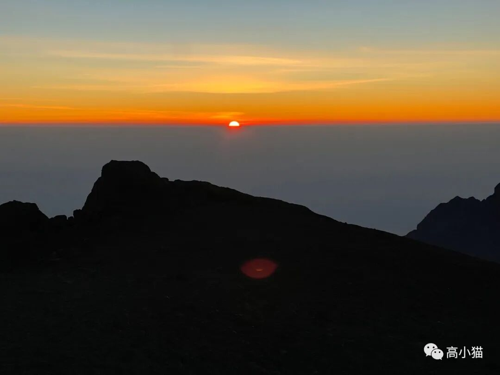
日出一路上也还能看到冰川，不过太远了，摸不到。
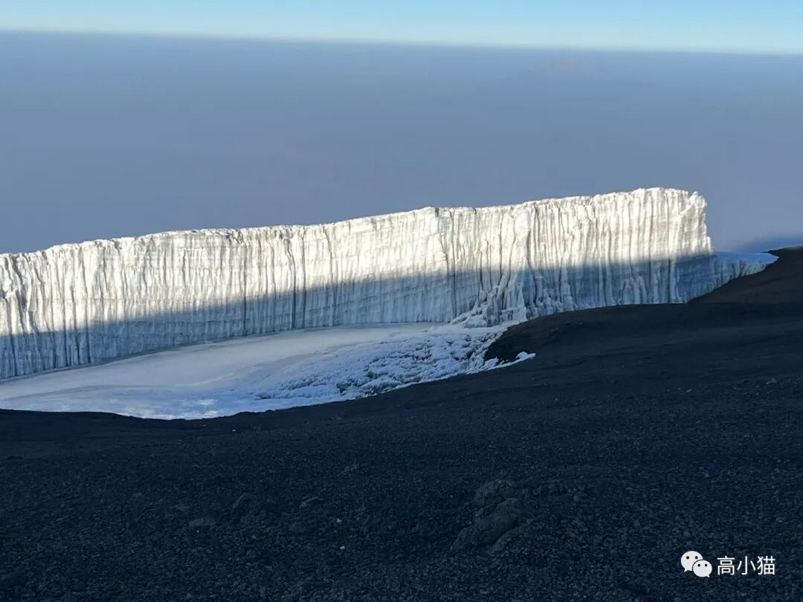
远处的冰川走着走着，我又有点走不动了。在将近6000米的高度，走路还是很累的，就算不用继续往上了。我也就开始慢慢放慢脚步，慢慢向前一点点挪。
就这样一直挪一直挪步，向前走走，停下来休息个10秒，再走走。终于我们到了最终的Uhuru peak。peak附近聚集了挺大一群人，大约三四十个，大家轮流在登顶的牌子前照相，庆祝登顶成功。我们也在那边合影，拍了不少照片。
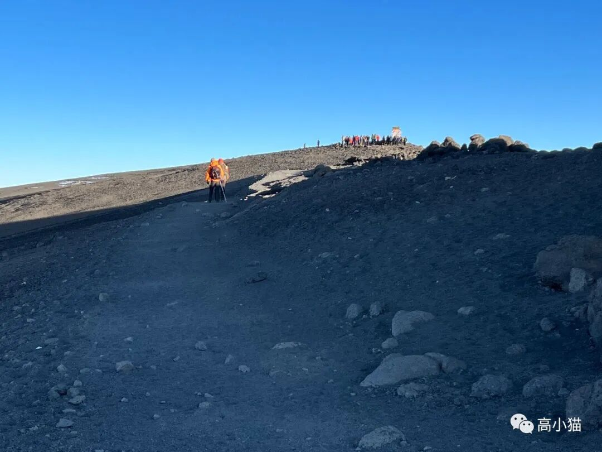
远处顶上庆祝的人们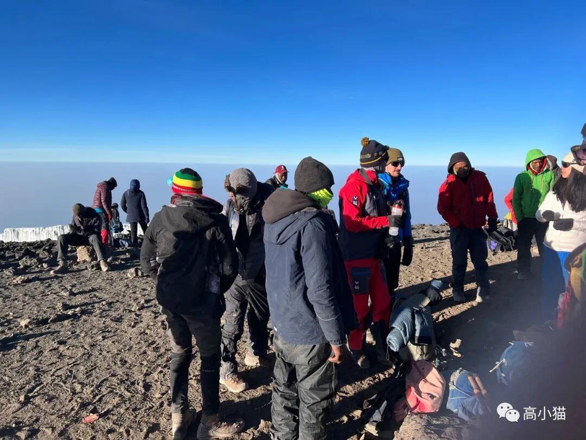
庆祝的人们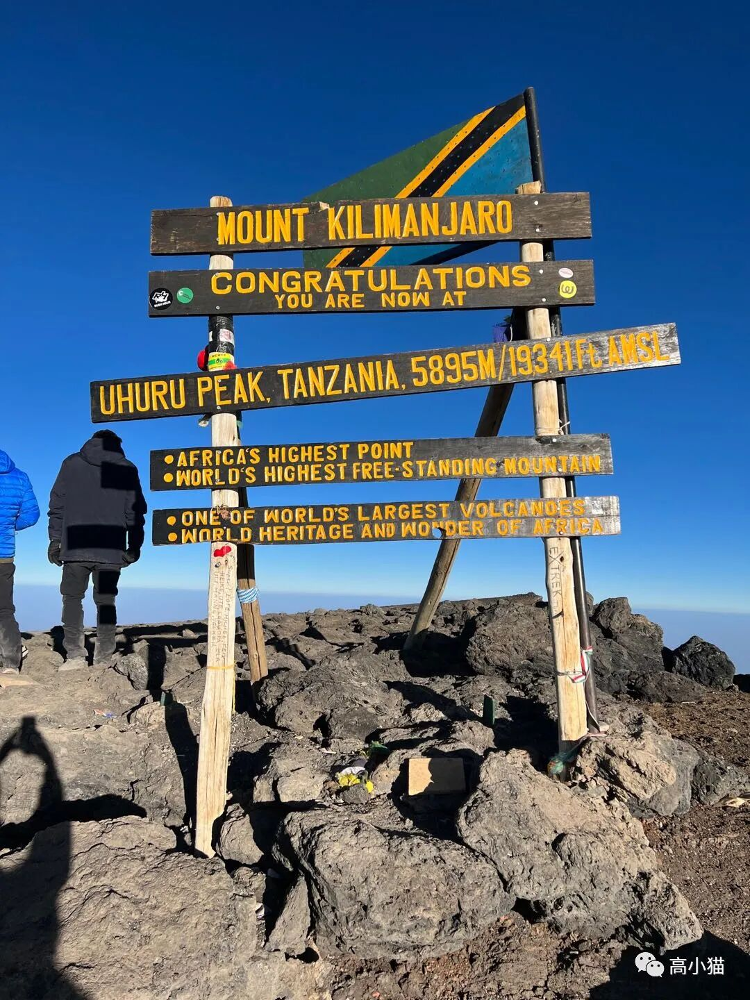
登顶～是时候回去了，我们开始往回走。不过上来的路我们走了整整7个半小时，下去少说也要三四个小时。我这个时候已经很累很累了，就算是在平地走，也走不太快。
Zakayo似乎有点急了，脚步上开始变快，我跟不上他了，拉开了一段距离，他只好停下来等我。就这样走了一段，他提议说让Fadhili和他一人一边，把我扛下山。我们试了一下，虽然确实快了很多，但是我在中间虽然不用保持身体的平衡了，但是还是要快步走的，这样子没走一会儿我就太累了，又大口喘着气。我怕我这样下去高原反应会加剧。
于是我不愿意让他们继续扛着我了，还是慢慢自己往下走。
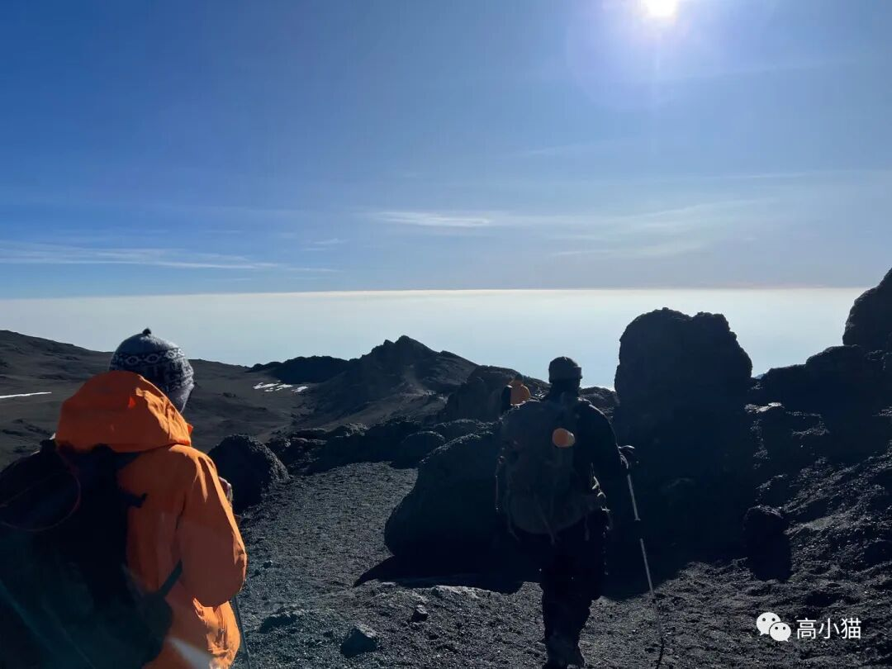
往下走大约往下走了一个多小时，我的crew里的两个成员，Waiter Dominic和Porter Dominic，从山下走上来了。这时候海拔低了不少，我也更有力气了。Zakayo让他们扛着我下山。可能是因为他们昨晚睡得很好吧，扛着我感觉更稳。于是我们三个人就以一个非常快的速度往山下飞奔，不断地越过下山的人们。我的感觉并不是很好，因为我觉得我自己可以慢慢走下山，不需要他们扛着我，不过我也确实是累了，也就算了。
在往山下跑的途中，我还是不时需要停下来休息一下，最终我们大约在11:30左右回到Barafu camp，下山大约用了3-4个小时。
到camp的时候，我真的已经累瘫了。坐在椅子上直喘气，好一会儿才缓过来。其它的crew都围上来，帮我把鞋子脱掉，衣服脱掉，清理，我也没有力气回应他们。下山的一路上都是泥沙路，我因为要大口喘气，所以感觉嘴里鼻子里都是泥沙，嘴里咀嚼一下都感觉沙沙作响，鼻子底下因为擦鼻涕太多次，似乎也擦得有点痛。喉咙里感觉热热的，有点微痛，有一种第二天就要发烧的感觉。
我又挣扎着喝了点水，挣扎着把很多层的上衣，裤子都脱了。我的四层上衣里都被汗浸湿了，内衣，内衬的羽绒服，冲锋衣，外衬的羽绒服里湿答答的一片。下半身的两条运动羊毛裤也都湿了。我把它们都脱了，然后套上我脏得不成样子的防晒服和hiking的裤子，然后把头枕在睡袋上面，头上盖上帽子，在透过帐篷的日光的暴晒下睡着了。
大约睡了一个半小时，我感觉好多了。问Dominic要了一点热水，洗了把脸，漱了口。起来吃午饭，似乎又是炸鸡之类相对不错的东西，配上粥。吃完以后收拾行李，Zakayo今天真的很急，又在催我了，感觉有些反常，后来知道是因为今天的路程还有很长。
下午一点半我们出发，继续往海拔更低的Mweka camp走去。之所以这么安排，是因为这里离车能到达的地方距离很远，我剩下的体力不足以支撑我直接走到大门那边，所以我们今天走一部分，明天早上再走一部分，就可以到大门了。就算是这样，一半距离的Mweka camp距离我目前所在的Barafu camp也有13km，大约要走5-6个小时。
因为睡了一觉，我感觉有精神多了，而且随着越往山下走，海拔也就越低，呼吸也就越来越顺畅。一开始的三分之一我和Zakayo是一路快步在走的。一开始的景色有点类似于沙漠，路也很好走。
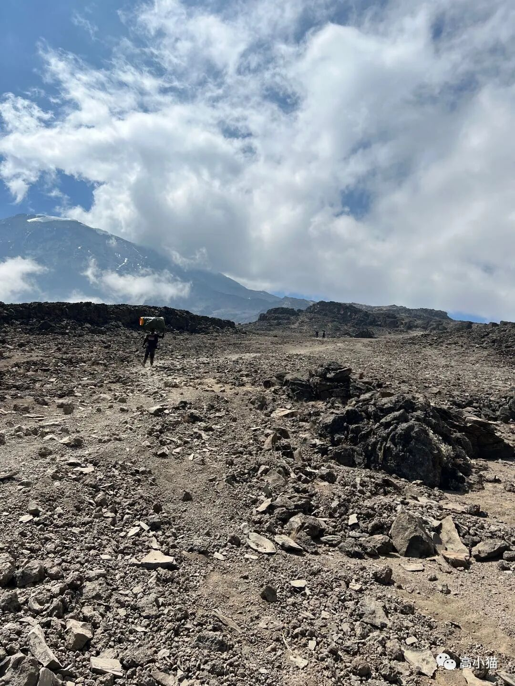
沙漠地形，当然地上也有很多石头慢慢海拔越来越低，路上也开始出现一些植物。
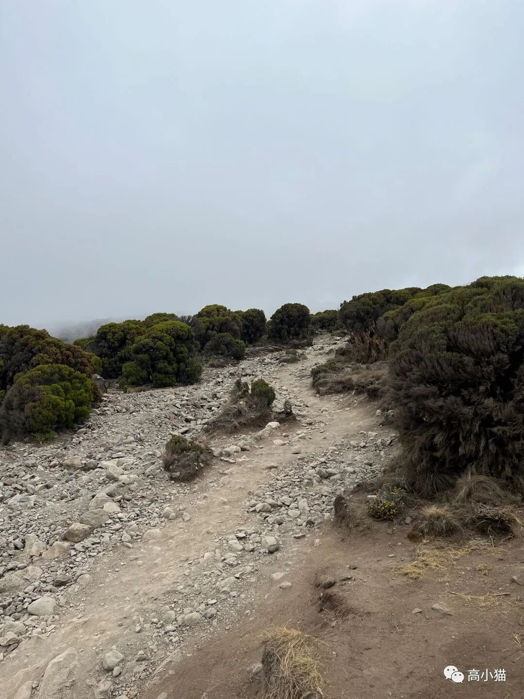
越往下植物越多大约走到一半的时候，我们经过了一个camp，叫high camp，3950m的海拔，不过这个时候我已经不是很有高海拔的感觉了。
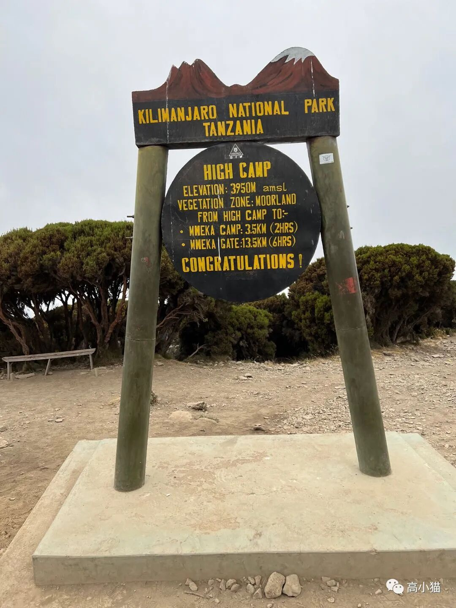
high camp越往前走，树木也开始越来越多，从high camp往下，有一条政府修了一半的石头路。上面的石头凹凸不平，极其硌脚。
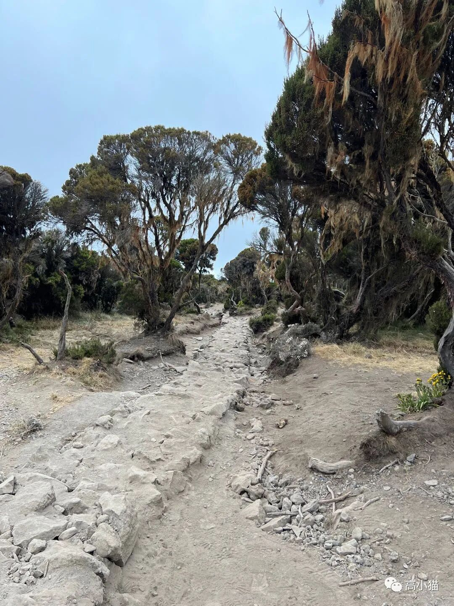
政府修到一半的石头路再往后的路有大量的向下的这种石头铺成的台阶路，我感觉我的脚又开始酸了，膝盖也开始酸。
然后终于，大约在5点半左右，我们到了Mweka camp，从这里再往大门走，只要再走3-4个小时就可以走到了。
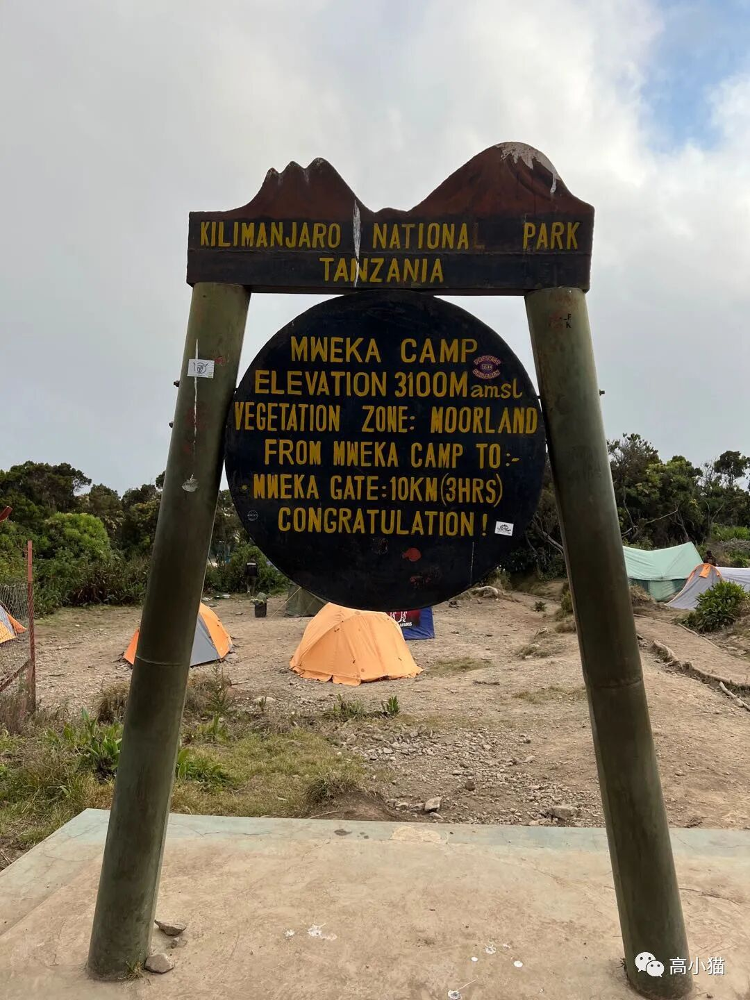
Mweka camp漫长的一天终于要结束了。我用热水洗漱了两遍，想到明天终于可以洗热水澡了，不禁有些高兴。跟家人和朋友说了一下顺利登顶的消息以后，我也就准备睡了。
回头来看，我觉得我这样的体力，这样的准备，真的也就是刚刚好勉强能爬上来。不过我也跟一些比我爬得稍快的同行者聊天，他们也觉得非常tough。
Zakayo之前跟我说的80多岁的老太太，哮喘病人，残疾人也都上去过，我爬完以后觉得可能只是个例。至少在我上山的这次几十人里，我一个这样的人也没见到。我这次登顶只是天时地利人和都在。我恰好在登顶之前的那个下午睡得特别好，整个行程里我也没有一天没睡好的。整个行程里也都没有下雨。我的crew以及guide也都非常给力，非常帮我，做的东西虽然说不上多好吃，但是我都基本吃饱了。可能少一些条件，我这次就登不上去了。
我想我爬过这一次以后这辈子也就够了，乞力马扎罗山，我应该不想再爬一次了。
我感觉在Zakayo的文化里，他觉得只要一个人相信自己，有足够强的will power，就什么都可以做成，不管现实条件是如何。他跟我说他带上山的84岁老太，之前也没有什么运动，但是因为很坚持，所以登顶的故事，里面似乎就隐含了这样的寓意。我个人不太认同这一套，因为可以举出太多的反例了，人的意志力可以改变很多事，但是绝不是所有事，很多时候还是要有积累，要有方法论的。
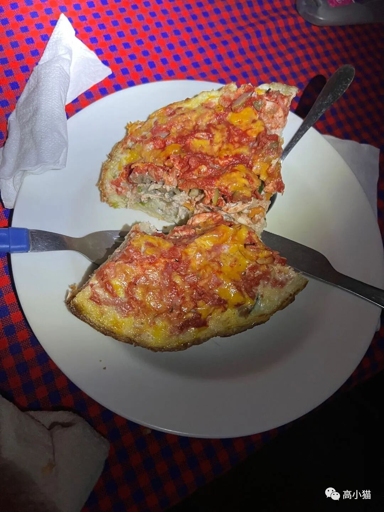
晚饭，鸡肉伪披萨话说Mweka camp的蚊子真的很多，晚上天黑以后，很多的长得非常吓人的大蚊子就在camp里到处飞。我不太清楚为什么第一天的在森林里的camp没有那么多蚊子，可能那边没有这么湿吧。
我赶紧吃了抗Malaria的疫苗药，喷上灭蚊的东西，然后把帐篷拉起来，把里面的蚊子消灭干净以后，这一天终于结束了。
后记：
这个系列到此也就结束了，后续的故事我也不太想再写了。无非就是回到了山下，crew给我举办了庆祝仪式，然后我终于回到了酒店，好好洗了个热水澡，好好休息了一下。
这篇文章是我从坦桑尼亚经埃塞俄比亚飞往土耳其的飞机上断断续续完工的，中间有太多模糊的东西，已经有些记不清了，不过最让我记忆深刻的，就是在那黑夜寒风中的艰难前行，以及终于抵达后的一缕曙光。
完